Hello, I'm Garrett.
I'm a full stack web developer.
View my work.


As a full stack developer, I am deeply committed to the philosophy of life-long learning and have a passion for JavaScript, React, and all things web development. The combination of creativity, logic, technology, and the endless possibilities for learning and growth in this field drive my excitement and passion for web development. In my free time, I enjoy staying active and fit through martial arts and playing the drums. These activities not only help me to stay focused and energized, but also bring balance to my life and work.